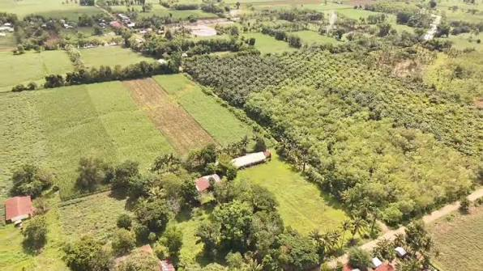
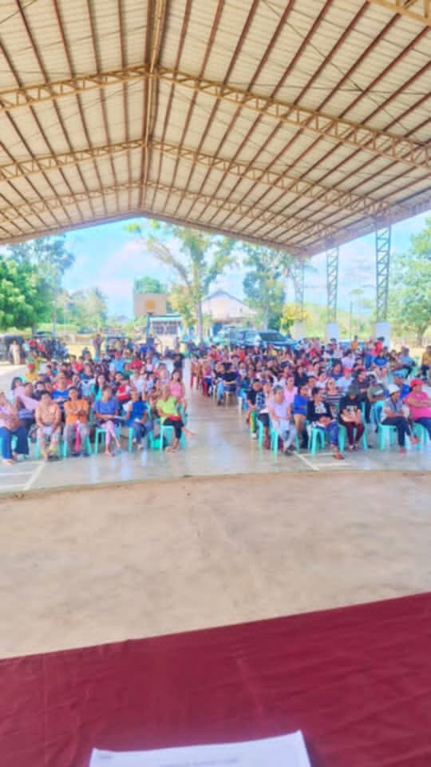
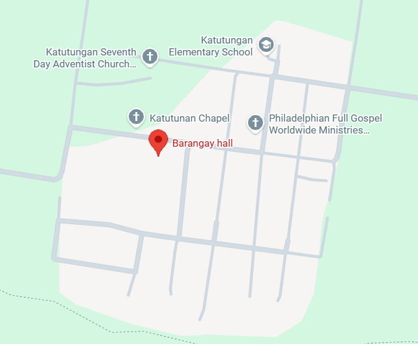

General Profile
History
Barangay Katutungan was established in the early 1960s by settlers from the Visayas and Luzon. The name "Katutungan" comes from the local term for "unity" — reflecting the harmonious blend of cultures. Over the decades, it has grown into a thriving agricultural community that preserves heritage and unity among diverse cultural roots.
Photo caption: Historical chapel built by original settlers in 1972.

Location
Located in the municipality of Wao, Lanao del Sur, Katutungan is nestled in the rolling hills of the province, formerly Poblacion. It is bordered by lush farmlands and the scenic Wao River, providing rich natural resources, agricultural lands, and stunning panoramic views of the valley.
Photo caption: Geographic location and center layout of Barangay Katutungan.

Population
Barangay Katutungan has a growing population of over 4,200 residents, comprising families from various cultural heritages coexisting in peace and mutual respect. The active, youth-centric population is heavily involved in regional livelihood programs and sports activities.
Photo caption: Community gathering and local population engagement activities.

Our Vision
"To become a peaceful, progressive, environmentally sustainable, and economically empowered barangay with active community participation."
Our Mission
"To provide quality public service, promote transparency, strengthen community development, preserve culture, and improve the quality of life of every resident."
Barangay Boundary Map

Map caption: Official administrative boundary mapping of Barangay Katutungan.